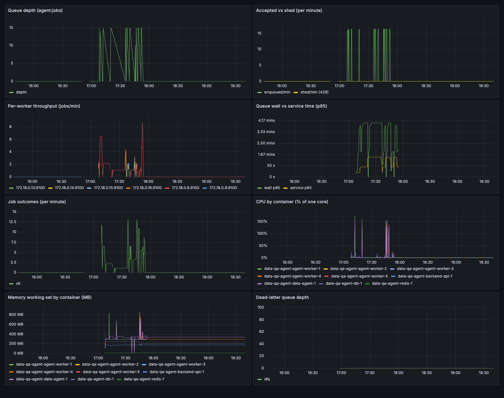
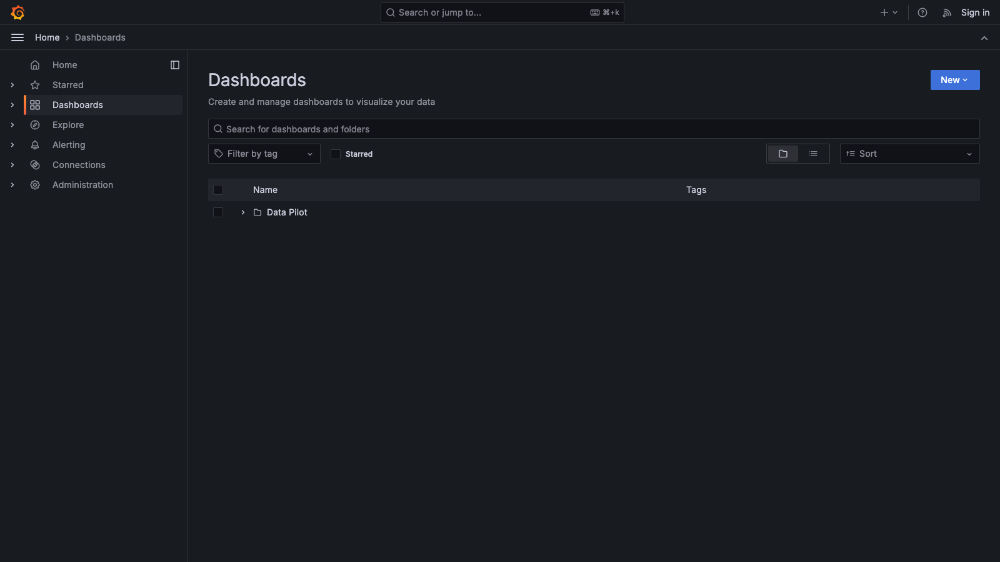

The full s41 sweep ran this morning: 1/3/5 workers × 10/30/60 s service time, 15 one-shot users per cell, plus the concurrency bonus cell — all on the live stack through Redis Streams, with every answer streamed end-to-end. Zero shed, zero errors, zero timeouts across 150 requests.
Adding workers cuts total time through the queue almost exactly in proportion: 3 workers → 2.97–2.99× faster, 5 workers → 4.87–4.98× faster, at every service time. Every one of the 9 grid cells landed within 0.5–6% of the closed-form prediction ⌈15/W⌉ × S. And the bonus cell answered your architecture question with a number: one worker process running 4 concurrent react loops beat three serial replicas (121.8 s vs 152.3 s) — slots are slots, whether they're processes or coroutines.
Each panel is one service time S; bars are measured burst-drain time for 1 / 3 / 5 workers, the dashed marks the prediction ⌈15/W⌉ × S. The measured bar overshoots prediction by only the per-wave overhead (frame relay + persistence, ~150 ms/wave).
Every cell: 15/15 answered, nothing shed, nothing dead-lettered. median answer is what the median user experienced end-to-end (queue wait + service); throughput is answers per minute during the burst.
| cell | workers | service | predicted | measured | err | speedup | median answer | throughput |
|---|---|---|---|---|---|---|---|---|
| W1-S10 | 1 | 10 s | 150 s | 154.8 s | 3.2% | 1.0× | 82.9 s | 5.8/min |
| W3-S10 | 3 | 10 s | 50 s | 52.1 s | 4.2% | 2.97× | 31.5 s | 17.3/min |
| W5-S10 | 5 | 10 s | 30 s | 31.8 s | 6.0% | 4.87× | 21.1 s | 28.3/min |
| W1-S30 | 1 | 30 s | 450 s | 454.7 s | 1.0% | 1.0× | 242.4 s | 2.0/min |
| W3-S30 | 3 | 30 s | 150 s | 152.3 s | 1.5% | 2.99× | 91.5 s | 5.9/min |
| W5-S30 | 5 | 30 s | 90 s | 91.7 s | 1.9% | 4.96× | 61.3 s | 9.8/min |
| W1-S60 | 1 | 60 s | 900 s | 904.7 s | 0.5% | 1.0× | 482.9 s | 1.0/min |
| W3-S60 | 3 | 60 s | 300 s | 302.4 s | 0.8% | 2.99× | 181.5 s | 3.0/min |
| W5-S60 | 5 | 60 s | 180 s | 181.6 s | 0.9% | 4.98× | 121.1 s | 5.0/min |
| W1-S30-C4 | 1 (× 4 slots) | 30 s | 120 s | 121.8 s | 1.5% | 3.73× | 61.3 s | 7.4/min |
You asked whether one data-agent worker must grind through requests one at a time, or can interleave them during the LLM react loop. Both are now measured facts:
The golden-signals deck ran through every cell — fed by Prometheus + the new docker-stats exporter. Below: the actual deck over this morning's sweep window, then how to open it yourself, then what an engineer would take away.

make queue-up WORKERS=3 starts Prometheus + Grafana + the stats exporter
alongside the queue (the obs compose profile). Then open
http://localhost:3000 — anonymous access is pre-configured as
Admin locally, so there's no login; ignore the welcome page.
Direct link to the deck: http://localhost:3000/d/dataqa-queue
Left sidebar → Dashboards → folder Data Pilot → “Queue — depth, throughput, wait vs service” (provisioned from ops/grafana/dashboards/queue.json, so it's always there on a fresh boot). Set the time picker (top right) to cover your run — e.g. Last 1 hour while a sweep is live; it auto-refreshes every 5 s.

Service p95 tracked S in every cell (~10/30/60 s — the histogram reports 19.5/44.3/88.5 s because bucket edges interpolate; the probe's per-user timings carry the exact values). Queue-wait p95 is the lever that moved: at S=30, from ~420 s (W1) → ~120 s (W3) → ~60 s (W5). That divergence — wait ≫ service — is precisely the "add workers" signal on the dashboard. Caveat: the wait histogram's top bucket is 240 s, so the W1 cells clip there; the probe data is the source of truth for the long tails.
Answers per minute at S=10: 5.8 (W1) → 17.3 (W3) → 28.3 (W5) — 4.9× for 5× the slots. The per-worker throughput panel showed each replica contributing an even share (the consumer group balances by pull, so no replica hot-spots).
Steady-state CPU with the stub is deliberately ~0–3% per worker (the stub sleeps — that's the experiment isolating queueing). The CPU row still earned its keep twice: replica boot is expensive — restacks spiked to 500–750% total as 3–5 replicas warmed pyodide/ONNX concurrently — and the backend stayed ≤10% CPU while relaying 15 concurrent SSE streams. Real answer CPU comes from live-LLM runs (E9), where the sandbox actually works.
A warm replica holds ~300 MB at cruise, up to ~840 MB freshly warmed (pyodide + ONNX); W5 cells peaked at ~4.2 GB of worker memory on one laptop. Notably, WORKER_CONCURRENCY=4 stayed inside one replica's footprint (~1.45 GB peak incl. 4 in-flight jobs) — a third of five replicas' worth for comparable capacity. Memory, not CPU, is what bounds worker count on small hardware.
150/150 ok — no shed (depth 32 held; peak backlog 14), no expired deadlines, no dead-letters (the new DLQ-depth panel stayed at 0), no restarts. The error panels being flat is only meaningful because s40's chaos drills can make them move.
out/wsweep/summary.json — all 10 rows;
out/wsweep/<cell>.json — per-user probe timings;
every answer persisted to app.query_runs with
queue_wait_ms / worker_id / deliveries. Rerun any
cell: python3 scripts/wsweep.py --cells W3-S30.
With live answers averaging ~90 s (the s40 A/B measurement), one serial worker sustains ~0.7 answers/min. Target a peak of, say, 10 concurrent askers with sub-3-min waits → 3–4 slots. The formula held to within 6% everywhere it was tested.
wait p95 rising while service p95 is flat = under-provisioned slots (scale out); both rising = the agent itself got slower (an eval-loop problem, not an infra one). This sweep demonstrated the first pattern on demand.
Stubbed service time is exact by construction — that isolates queueing, but live answers vary (60–120 s), which smears wave boundaries; expect the same means with wider spread. All replicas shared one laptop; isolated nodes only improve the story. Warm-up must stay ahead of scale-out (a cold replica costs ~30 s before its first answer).
Everything above used the stub to isolate queueing. E9 reruns the burst with real DeepSeek answers: 10 users at once, through the queue (3 workers) and then straight at the single data-agent container (queue off). 20/20 answered, zero errors.
| leg | makespan | median answer | slowest user | peak agent CPU | peak agent memory | concurrent LLM calls |
|---|---|---|---|---|---|---|
| Queue · 3 workers | 197.0 s | 121.4 s | 197.0 s | 331% (≈110%/worker) | 2.0 GB (3 replicas) | ≤ 3, by construction |
| Direct · 1 container | 72.9 s | 60.7 s | 72.9 s | 816% (one process) | 2.3 GB (one process) | 10, unbounded |
Live service time ran 25–85 s per answer (local stack, warm prompt cache — faster than prod's ~95 s). Queue leg: ⌈10/3⌉ = 4 waves × ~50–60 s predicts ~200–240 s; measured 197 s. The stub sweep's arithmetic transfers to real answers.
The direct leg won on wall-clock because this laptop had 8+ idle cores to give one container (816% CPU peak — real sandbox work, unbounded). A prod App Runner instance has 1–2 vCPU: the same burst there serializes on CPU and stretches toward the 240 s timeout. The queue leg's CPU was flat-capped at ~110% per worker — a shape a small instance can actually honour.
Direct = fastest when resources are infinite, degradation when they're not. Queue = +~2 min for the last user, in exchange for bounded LLM spend (≤3 concurrent calls), bounded CPU/memory, and a clean 429 past depth 32. Raw data: out/wsweep/E9-queue.json · E9-direct.json.